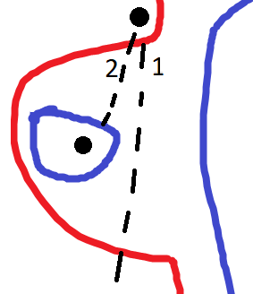

Blocking Escapes
Using your bullets to block escapes is a simple but incredibly important thing to do. If someone has been cut off from their area as seen in the example below then their are 2 shooting lines you must be using. Shooting line 1 is cutting the player off so that they cannot escape or if they do try they will be killed. Shooting line 2 is doing 2 things, firstly it is shooting the tower in front of them forcing them to deal with you and make sure their land doesnt get smaller and killed. The second thing shooting line 2 is doing is baiting the player into trying to escape and then you switch to shooting line 1 to kill them.
Bounce Gaps

Bounce kills are one of if not the best way to get kills in defly. You want to be shooting away from the player so that you can get the bounce in-behind the player where you will end up catching them off guard. You want to target a tower so that when the tower is destroyed the player will be exposed to your bullets and die (an example of this is shown below).
Bounce Closes

When you spot gaps like this where the target player is trying to close you want to make sure that just before the target player does close the gap that you get bullets inside that gap so when they close it the bullets will bounce everywhere and kill the player (below is an example of the shooting line).
Slowing Angles

This is all about slowing players down and trying to bait into a kill. Their are 2 different lines in this example similar to the lines in Blocking Escapes. Shooting line 1 is slowing the player from closes the gap. Shooting line 2 is doing 2 things, firstly it is shooting the tower in front of them forcing them to deal with you and therefore stopping them closing the gap. This is also a very good shooting line to stack your bullets as the player might be more focused on closing the gap. The second thing shooting line 2 is doing is baiting the player into trying to close the gap and then you switch to shooting line 1 to kill them or you try to get a single bullet (potshot) into the small area in-front of them where they will build towers to slowly edge closer to closing the gap and as they build towers if you time your shot correctly you can sometimes get a shot in that area and kill them.
Tower Destruction Angles
You want to be making sure that when you are destroying a tower you want to be shooting at it so that once a tower is destroyed your bullets will be directly hitting a target player or bouncing off a wall and then hitting the player. You do not want to be destroying a tower in a direction that doesn't trouble your target.
Tower Priority
Tower priority is all about which tower has the most connections to it, a tower with a higher number of connections will be harder for the target to defend and therefore be more likely to get you a kill. Targeting these towers at the right time to trouble your target can be incredibly powerful. When shooting these high priority towers make sure to be shooting them in a direction that is threatening your target.
Key